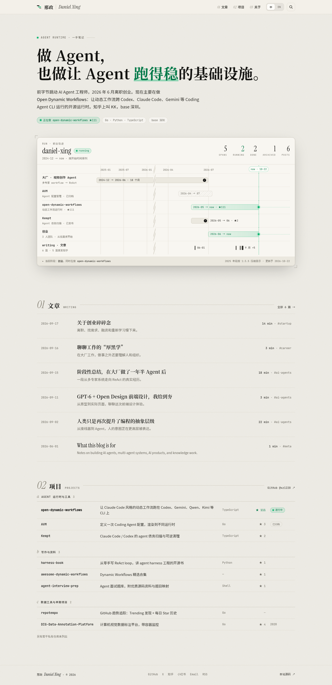
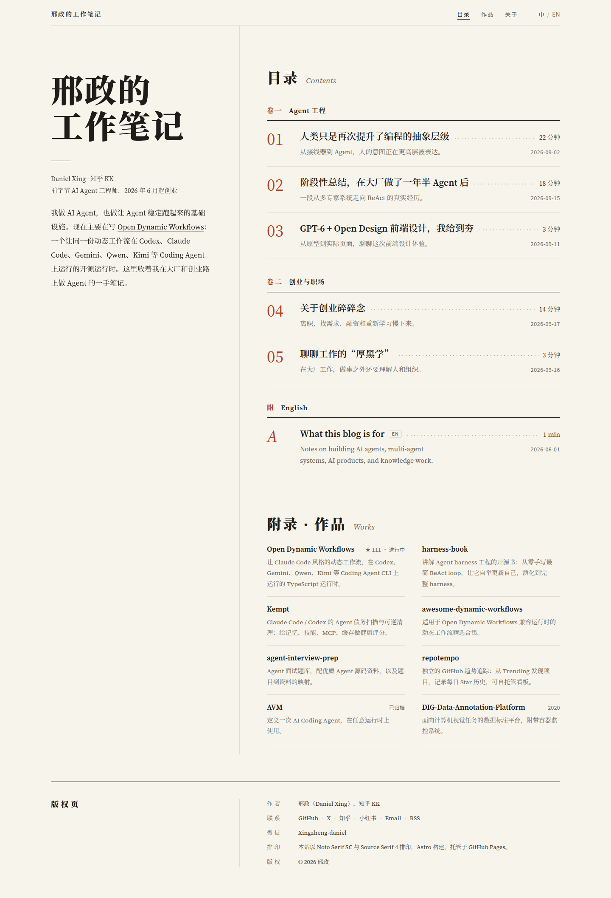
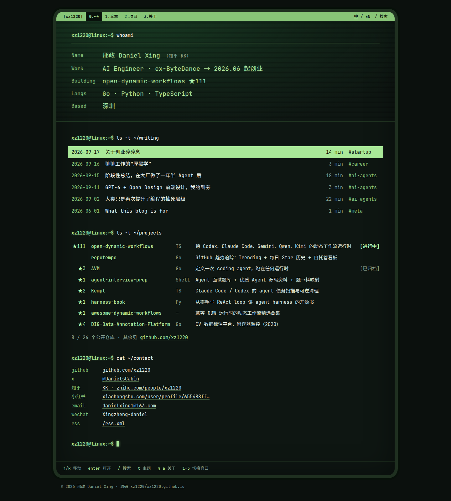

A · 运行日志 Run Log
与 ODW 站同一视觉家族 · 签名元素：职业 trace 瀑布图



B · 长文书房 The Book 已选 · 细化版
中文优先的书籍排印 · 签名元素：目录首页 + 边注 · 支持夜读



C · 终端 Terminal
延续 GitHub 主页 CRT 终端 · 签名元素：whoami 会话 + 键盘导航

同一份真实内容（6 篇文章、公开仓库），三种身份表达。点缩略图看大图，点“打开页面”看可交互的 HTML。
与 ODW 站同一视觉家族 · 签名元素：职业 trace 瀑布图

中文优先的书籍排印 · 签名元素：目录首页 + 边注 · 支持夜读

延续 GitHub 主页 CRT 终端 · 签名元素：whoami 会话 + 键盘导航
